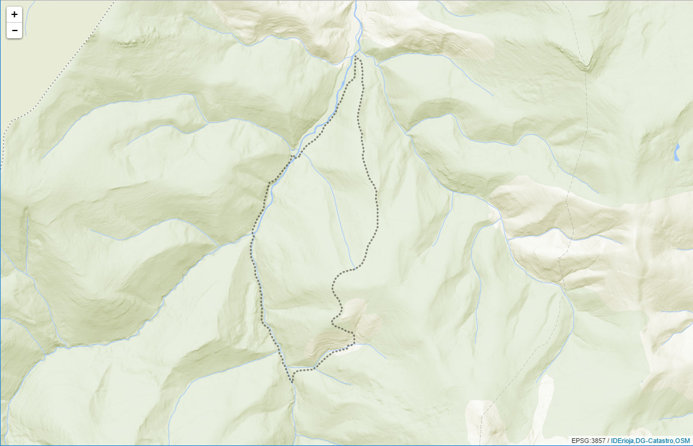

capa_gpx
La opción capa_gpx permite definir un array de archivos con la información geográfica a visualizar, expresados en formato GPX (The GPS Exchange Format)
El formato de intercambio GPX es un esquema XML ligero pensado para transferir datos GPS entre aplicaciones y servicios web en Internet. Se utiliza para describir puntos (waypoints), recorridos (tracks) y rutas (routes).
Notas:
(1) Esta funcionalidad se apoya en los servicios que ofrece el plugin leaflet_omnivore desarrollado por MapBox, para la librería JavaScript de mapas Leaflet. Para ampliar la información sobre su funcionamiento y opciones se recomienda consultar la documentación original.
(2) Para datos que pudieran mapearse desde una carpeta 'Public' de Dropbox, se informa según lo anunciado por esta compañía, que a partir del 15 de marzo de 2017 la carpeta Public se convertirá automáticamente en una carpeta estándar.
Propiedades
En esta opción además de las propiedades nombre y url, es posible configurar la representación de los elementos geográficos mediante un conjunto de parámetros de estilo.
| Propiedad | Parámetro | Tipo | V.defecto | Descripción |
|---|---|---|---|---|
nombre |
texto | (nulo) | Nombre de la capa geográfica. | |
url |
texto | (nulo) | (Obligatorio) URL absoluta o relativa en la que se ubica el fichero GeoJSON. | |
estilo |
Representación gráfica de polilíneas y polígonos | |||
stroke |
booleano | 'true' | Expresa si se quiere dibujar el trazado exterior (contorno) de un elemento gráfico.Configurar como 'false' si se quiere prescindir de los bordes en la representación de polígonos o círculos. | |
color |
texto | '#ff7800' | Color del trazo expresado en formato hexadecimal RGB #rrggbb.Se puede expresar también mediante su nombre (lista de colores). | |
weight |
entero | 2 | Anchura del trazo expresada en píxeles. | |
opacity |
número | 0.5 | Opacidad del trazo.Rango de valores: de 0.0 (totalmente transparente) hasta 1.0 (totalmente opaco). | |
lineCap |
texto | 'round' | Texto que define la forma que se utilizará para rematar el trazo.Valores posibles: 'butt', 'round', 'square'. | |
lineJoin |
texto | 'round' | Texto que define la forma que se utilizará para rematar la esquina de un trazo.Valores posibles: 'miter', 'round', 'bevel'. | |
dashArray |
texto | (nulo) | Cadena de texto que define el patrón de dibujo del trazo.Se expresa mediante una lista de valores separada por comas o espacios en blanco, indicando estos la longitud o porcentajes de los trazados alternativos de líneas y huecos. Si se usa un porcentaje, este representa una distancia como un porcentaje con respecto a la ventana de visualización actual.Los valores negativos son erróneos. Si la suma de los valores es cero, el trazo se renderizará como si se hubiera especificado el valor nulo.Si se indica un número impar de valores, se repite la lista hasta alcanzar un número par de valores. Por ejemplo '1,3,2' es equivalente a '1,3,2,1,3,2'. | |
dashOffset |
texto | (nulo) | Texto que expresa la distancia en longitud o porcentaje entre el comienzo del trazo y la representación del trazado. Si se usa un porcentaje, este representa una distancia como un porcentaje con respecto a la ventana de visualización actual. | |
fill |
booleano | 'true' | Esta variable define si se procede a colorear el interior de las formas gráficas.El área a colorear es cualquier conjunto de áreas dentro del contorno de la forma, considerando el contorno como la línea perimetral de ancho cero.Para determinar el interior del elemento se tendrán en cuenta todas las subformas conforme a las reglas establecidas en la variable fillRule.El valor 'true' activa el coloreado de las formas gráficas, en tanto que el valor 'false' deshabilita su coloreado. | |
fillColor |
texto | (color) | Color de relleno expresado en formato hexadecimal RGB #rrggbb.Se puede expresar también mediante su nombre (lista de colores).El valor por defecto es el correspondiente al parámetro color. | |
fillOpacity |
número | 0.2 | Opacidad del relleno.Rango de valores: de 0.0 (totalmente transparente) hasta 1.0 (totalmente opaco). | |
fillRule |
texto | 'evenodd' | Texto que define de qué manera se determina el interior de una forma gráfica.Valores posibles: 'nonzero', 'evenodd' | |
icono |
Representación gráfica de marcas e iconos | |||
iconUrl |
texto | Símbolo por defecto | URL absoluta o relativa en la que se ubica la imagen del icono. | |
iconRetinaUrl |
texto | Símbolo por defecto | URL absoluta o relativa en la que se ubica la imagen del icono, configurada para su uso en dispositivos que soportan el estándar "retina". | |
iconSize |
[x, y] | [25,41] | Tamaño de la imagen del icono (expresado en píxeles). | |
iconAnchor |
[x, y] | [12,41] | Coordenadas del "anclaje" del icono (relativas a su esquina superior-izquierda).El icono se alineará con objeto de que este punto sea la ubicación geográfica del marcador.Si se ha especificado el tamaño (iconSize), el valor utilizado por defecto es centrado. | |
popupAnchor |
[x, y] | [1,-34] | Coordenadas del punto en las que se abrirá la ventana emergente, respecto al punto de anclaje del icono. | |
shadowUrl |
texto | Símbolo por defecto | URL del icono de sombreado.Si no se especifica, no se utilizará sombreado. | |
shadowRetinaUrl |
texto | (nulo) | URL de la imagen "retina" utilizada para el sombreado del icono. Si no se especifica, no se utilizará sombreado. | |
shadowSize |
[x, y] | (nulo) | Tamaño de la imagen de sombreado (expresado en píxeles). | |
shadowAnchor |
[x, y] | (nulo) | Coordenadas del "anclaje" del sombreado (relativas a su esquina superior-izquierda).Si no se especifica se utilizará el valor iconAnchor. |
{kind=link}
{kind=link}
{kind=link}
Código de ejemplo
El siguiente ejemplo muestra la configuración para la visualización de un fichero gpx que contiene el trazado de un recorrido (track) registrado con GPS:
<!DOCTYPE html>
<html>
<head lang="es">
<meta charset="UTF-8">
<title>Ejemplo de configuración capa_gpx</title>
<style>
body, html{
height: 100%;
border: 0;
padding: 0;
margin: 0;
}
#map{
width: 100%;
height: 100%;
}
</style>
</head>
<body>
<div id="map"></div>
</body>
<script>
var iderioja_config = {
"capa_gpx": [
{
"nombre": "Ruta GPS Achichuelo Nuevo",
"url": "https://raw.githubusercontent.com/iderioja/doc_api_iderioja/master/datos_ejemplo/ruta_gps_achichuelo_nuevo.gpx",
"estilo":{
color:'#1f1b0e', // Color del trazo
weight: 3, // Anchura del trazo
dashArray: '1,5', // Patrón de dibujo del trazo
}
}
]
}
</script>
<script src="https://apigeo.larioja.org/v1/iderioja.js"></script>
</html>
Salida gráfica
Representación del fichero GPX que describe el recorrido (track) GPS denominado Achichuelo Nuevo en la Provincia de La Rioja (España), en la que se han configurado el color, el grosor y el patrón de la línea. (visualizar ejemplo)
